Quick Game
Quick Game gives you instant access to a live beach volleyball match. Set up a game between two teams in seconds, track scores, manage side changes and service, and review the full match history — all without any tournament configuration.
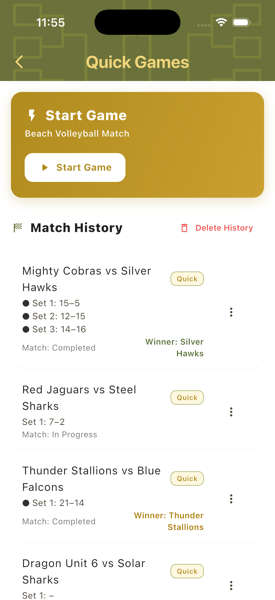
Best for
- Casual matches at the beach or in training
- Informal club sessions with fixed teams
- Any situation where you just need a reliable scorekeeper
Setting Up a Quick Game
Tap Start Game to open the Game Setup sheet. Choose a match style and format, then configure your teams — manually, by importing from the Players Hub, or by generating random team names.
Choose Match Format
Select the match style (2v2) and format: One Set to decide the winner in a single set, or Best of Three Sets where the first team to win two sets wins the match.
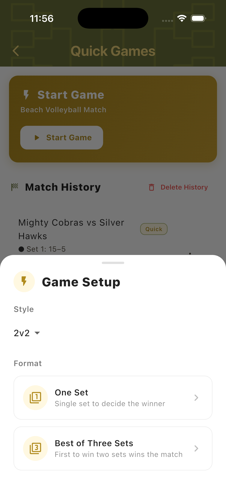
Configure Teams
The team setup screen shows two team slots. Each can be filled by editing team and player names directly, or by importing an existing team or individual players from the Players Hub.
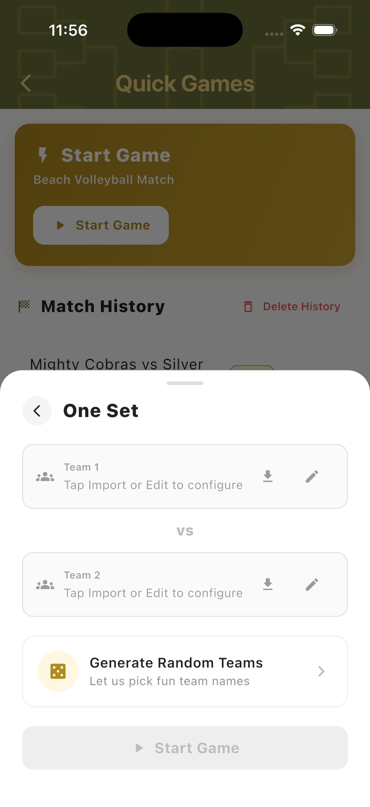
Create a Team
Give your team a name and enter player names. Each player slot includes a search icon to pull an existing player from the Players Hub without re-entering their details.
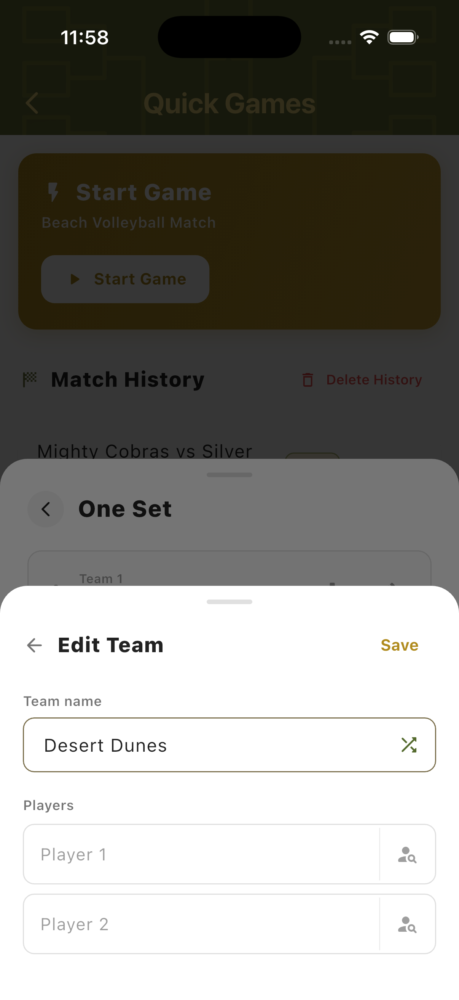
Import Players
Tap the import icon on any player slot to open the Players Hub. Search by name or filter by group to find existing players and add them directly to the team.
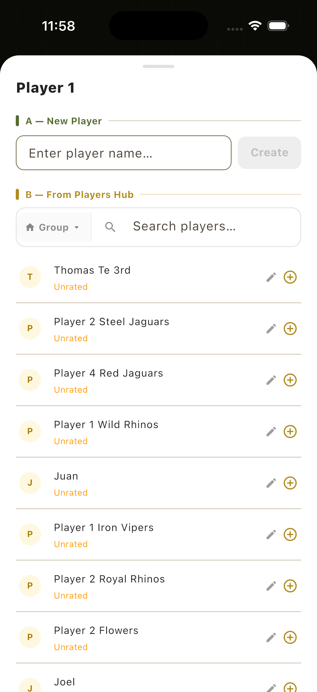
Import a Team
Tap the import button on a team slot to load an existing team from the database — including saved player names — directly into the match setup without re-entering anything.
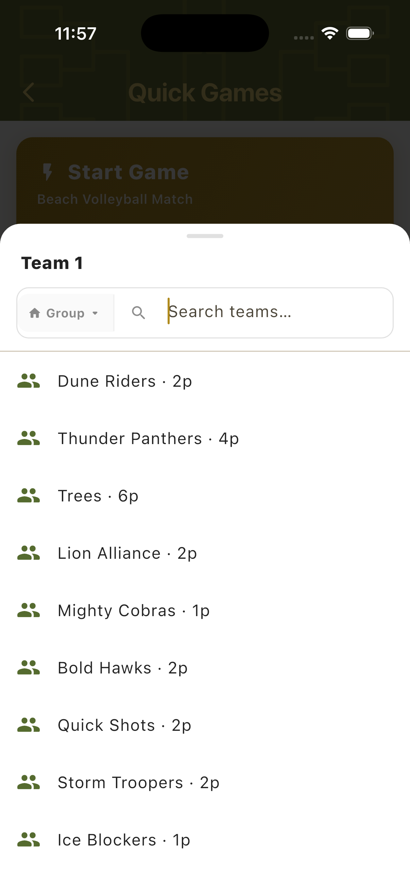
Random Teams
Tap Generate Random Teams to let the app assign fun random names to both teams. Tap Re-roll Teams to generate new names, then start the game immediately.
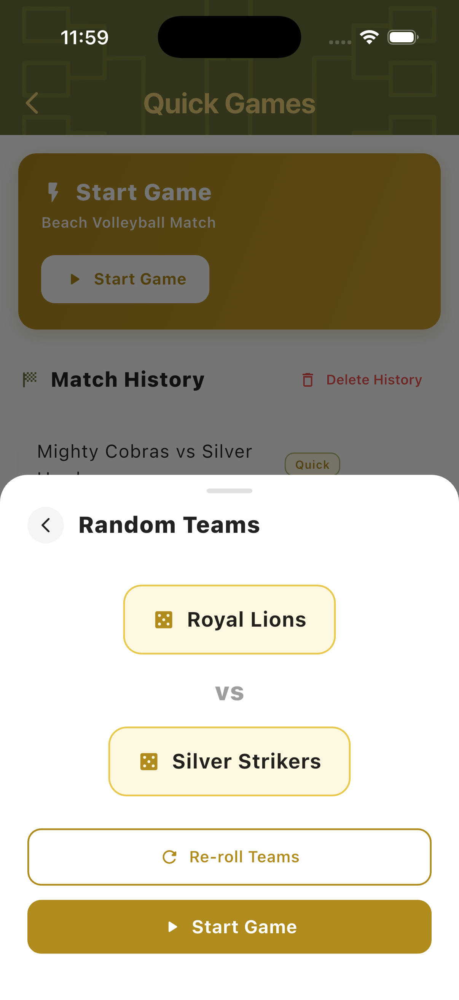
Scoreboard
The Quick Game Scorecard is the live scoring screen. It shows both teams, player names, the current set score, the active server, and match action buttons — all on a single view.
Portrait Scorecard
The standard vertical layout shows both teams side by side with large score digits and plus/minus buttons. The current set and target score appear at the top. The active server is highlighted with a gold background within the team card.

Landscape Mode
Rotate the device to switch to landscape view. Teams stack vertically with set info and score on the left side. Useful when placing the phone on a net post or table during play.

Multi-Set View
In Best of Three format, set tabs appear at the top of the scorecard. Completed sets are greyed out and show the final score. The active set is highlighted in gold. The third set tab becomes active only if needed.
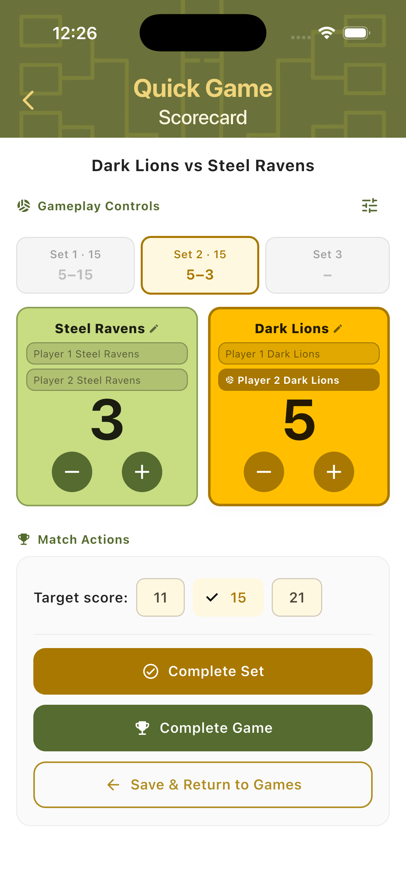
Match Controls
Side changes and service tracking happen automatically during scoring. Tap the controls icon in the top right of the scorecard to open the Game Options panel for additional adjustments.
Side Change Alert
When the combined score reaches the halfway point — for example a total of 5 in a set to 15 — a Side Change dialog appears automatically. Confirm that the teams have physically switched sides, then continue scoring.
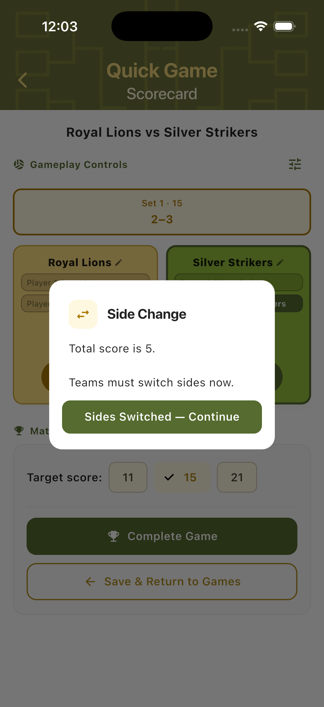
After Side Change
Once confirmed, teams are automatically swapped on the scorecard so the left/right layout always reflects the physical court positions. Scoring continues immediately with no disruption.
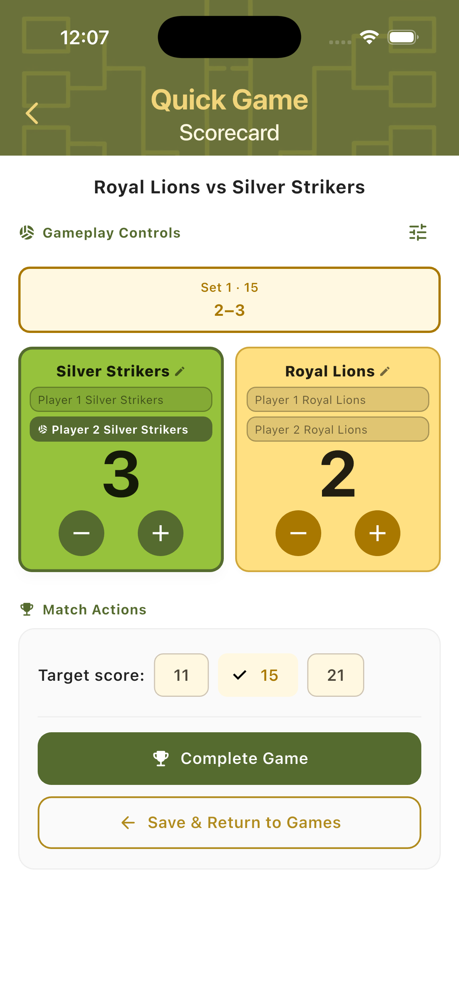
Service Tracking
The current server is highlighted with a gold background inside the team card. Service changes automatically when the non-serving team scores. The active player indicator moves accordingly on every point.
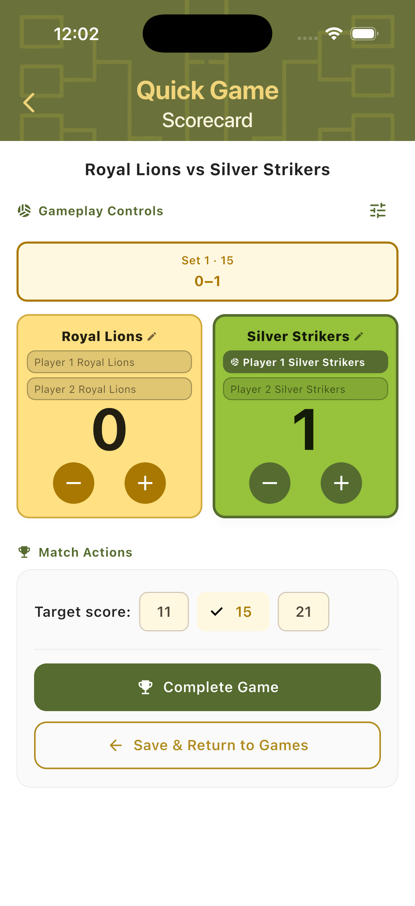
Game Options Panel
Tap the options icon to open the Game Options sheet. From here you can manually swap teams (switch left and right sides), advance the server, or open the Match History view for a point-by-point log.
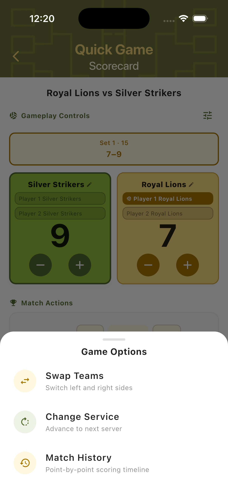
Adjust Players
Tap a team name on the scorecard to open the player adjustment panel. Drag players up or down using the handle to set the serve order. Changes take effect on the scorecard immediately.
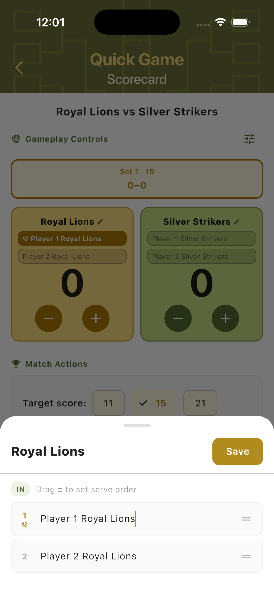
Match History
Every scored point is logged in real time. The Match History view shows a full point-by-point timeline, including who scored, the running total, and the moment side changes occurred. Completed matches are automatically saved to the Quick Games hub.
Point-by-Point Log
The Match History screen shows each rally result in sequence — which team scored, the running totals on both sides, and which player was serving. Side changes are marked inline. The final score is shown at the bottom.
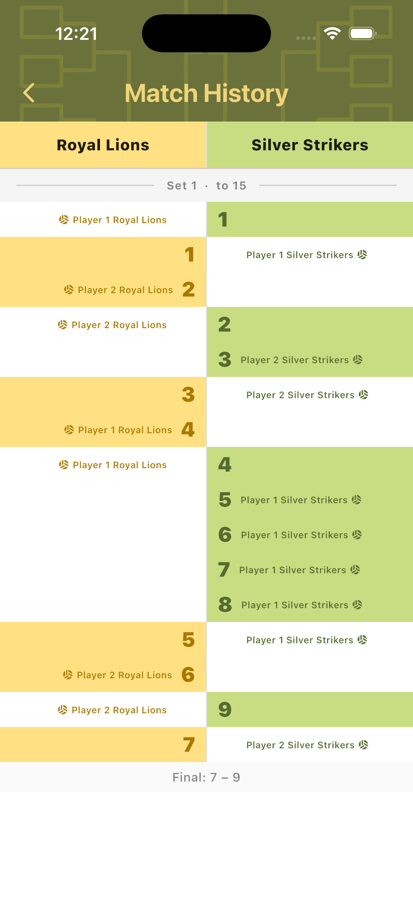
Saved Match History
Completed and in-progress matches are automatically saved and listed on the Quick Games hub. Each entry shows the team names, set scores, match status, and the winner. Previous matches can be reviewed or deleted from this view.
Step-by-Step Workflow
- Open TournaQ and navigate to Quick Games.
- Tap Start Game to open the Game Setup sheet.
- Select match style (2v2) and format (One Set or Best of Three Sets).
- Configure Team 1 and Team 2 — enter names manually, import from the Players Hub, or generate random teams.
- Tap Start Game to open the Scorecard.
- Use the + and − buttons to track each scored point. The active server updates automatically.
- Confirm side changes when the alert appears mid-set.
- In Best of Three format, tap Complete Set after each set to move to the next.
- Tap Complete Game to finalise the match. The result is saved to Match History.
- Return to Quick Games to review past matches or start a new game.
Have a question about Quick Game, spotted something missing, or want to suggest an improvement?